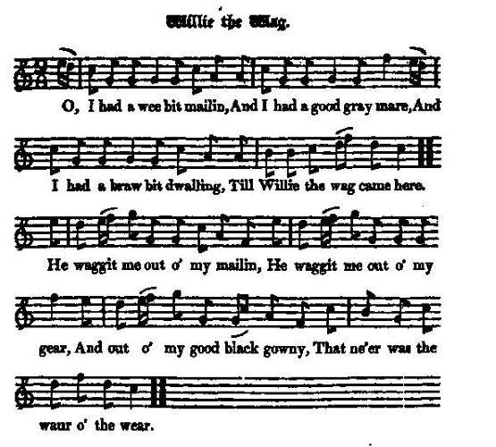
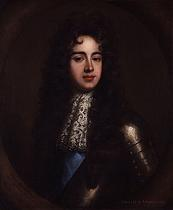
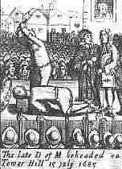

Willie the Wag
Guillot le faussaire
A Satire on William of Orange
Tune - Mélodie"Willie the Wag"
from Hogg's "Jacobite Reliques" N°21
Sequenced by Christian Souchon

|
There is apparently no connection between this song and the Scots measure "Willie was a wanton Wag" published in McGibbon's "Scots Tunes, Book 1", around 1746.
Source "The Fiddler's Companion" (cf. Links). |
Il n'y a semble-t-il aucun lien entre ce chant et la danse écossaise "Willie was a wanton Wag" publiée dans l'ouvrage de McGibbon, "Scots Tunes, tome 1", vers 1746.
Source "The Fiddler's Companion" (cf. liens). |

|
WILLIE THE WAG
1. O, I Had a wee bit mailin, And I had a good gray mare, And I had a braw bit dwalling, Till Willie the wag came here. He waggit me out o' my mailin, He waggit me out o' my gear, And out o' my bonny black gowny, That ne'er was the waur o' the wear. 2. He fawn'd and he waggit his tail, Till he poison'd the true well-e'e; And wi' the wagging o' his fause tongue, He gart the brave Monmouth die. He waggit us out o' our rights, And he waggit us out o' our law, And he waggit us out o' our king ; O that grieves me the warst of a'. 3. The tod rules o'er the lion, The midden's aboon the moon, And Scotland maun cower and cringe To a fause and a foreign loon. O walyfu' fa' the piper That sells his wind sae dear! And O walyfu' fa' the time When Willie the wag came here! Source: Jacobite Minstrelsy, published in Glasgow by R. Griffin & Cie and Robert Malcolm, printer in 1828. |
GUILLOT LE FAUSSAIRE
1. Oh, j'avais une jument grise Ainsi qu'un petit moulin Une maison et sa remise Quand Guillot le faussaire vint: Et ma maison voilà qu'il l'a prise; Il m'a dépouillé de tout mon or Et de ma belle robe grise Que j'aurais pu porter encor. 2. Il aveugla les plus lucides, En frétillant comme un chiot, Et sut par sa langue perfide Conduire Monmouth au billot. Et tenant en échec nos usages. Il a su circonvenir nos droits, Mais causa le pire dommage. En nous privant de notre roi, 3. Quand sur le lion le renard règne, Le fumier va jusqu'aux cieux. Les Ecossais tremblent et geignent Devant un étranger captieux. O maudite soit la cornemuse Qui nous fait payer son vent si cher! Et le triomphe de la ruse Dont advint Guillot le faussaire! (Trad. Christian Souchon(c)2009) |
|
A satirical complaint of King William's intrusion, as it was called by the Jacobites, at the Revolution in 1688. The present song is a squib at his ingratitude to his father-in-law James.
|
Complainte satirique sur l'"usurpation du roi Guillaume", nom donné parles Jacobites à la "glorieuse" révolution de 1688. Le présent chant souligne son ingratitude envers son beau-père, Jacques II. |
|
|
|
|
 James Crofts, later James Scott, 1st Duke of Monmouth and 1st Duke of Buccleuch (9 April 1649 – 15 July 1685), was the eldest illegitimate son of Charles II and his mistress, Lucy Walter, who had followed him into continental exile after the execution of Charles's father, Charles I. Monmouth was executed on Tower Hill in 1685 after making an unsuccessful attempt to depose James II, commonly called the Monmouth Rebellion.Declaring himself the legitimate King, Monmouth tried to make the best of his position as the son (albeit illegitimate) of Charles II, and of his Protestantism, in opposition to James, who was Catholic. It is said that it took multiple blows of the axe to sever his head. The present song links this execution to William's plotting. One of the many theories about the identity of The Man in the Iron Mask is that he was Monmouth. It seems to be based on the reasoning that James II would not execute his own nephew, so someone else was executed, and James II arranged for Monmouth to be taken to France and put in the custody of his cousin Louis XIV of France. However, the earliest French records referring to The Man In The Iron Mask date back to 1669, years before Monmouth's arrest. Source: Wikipedia (See also Our King enjoys his own again ). |
 James Crofts, puis James Scott, 1er duc de Monmouth et 1er duc de Buccleuch (9 avril 1649 - 15 juillet 1685) était l'aîné des fils naturels de Charles II et de sa maîtresse, Lucie Walter, qui l'avait suivi en exil sur le continent après l'exécution de Charles I, le père de Charles. Monmouth fut exécuté à la Tour de Londres, en 1685, après avoir tenté sans succès de déposer Jacques II. C'est ce qu'on appelle communément la "rébellion de Monmouth".Se déclarant le roi légitime, Monmouth tenta de profiter de ce qu'il était à la fois protestant et fils (bien qu'illégitime) de Charles II, alors que son oncle Jacques était catholique. On affirme que le bourreau dut sy prendre à plusieurs fois pour parvenir à le décapiter. Le présent chant établit un lien entre cette exécution et les intrigues de Guillaume d'Orange. L'une des nombreuses théories qui ont eu cours veut qu'il ait été l'Homme au masque de fer . Jacques II ne pouvant se résoudre à faire exécuter son propre neveu, lui aurait substitué un autre condamné et l'aurait fait partir pour la France pour le confier à la surveillance de son cousin, Louis XIV. Mais le plus ancien témoignage faisant état du mystérieux prisonnier remonte à 1669, bien avant l'arrestation de Monmouth. Source: Wikipedia (Cf. aussi Le Roi siège à nouveau sur son trône ). |
|
|
|